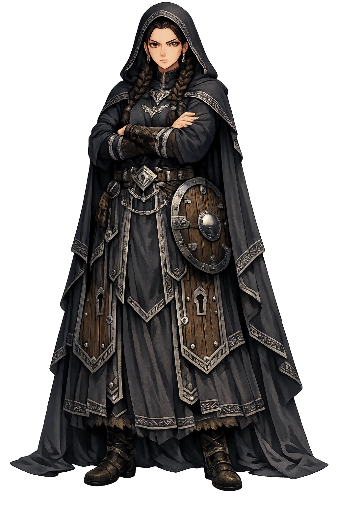
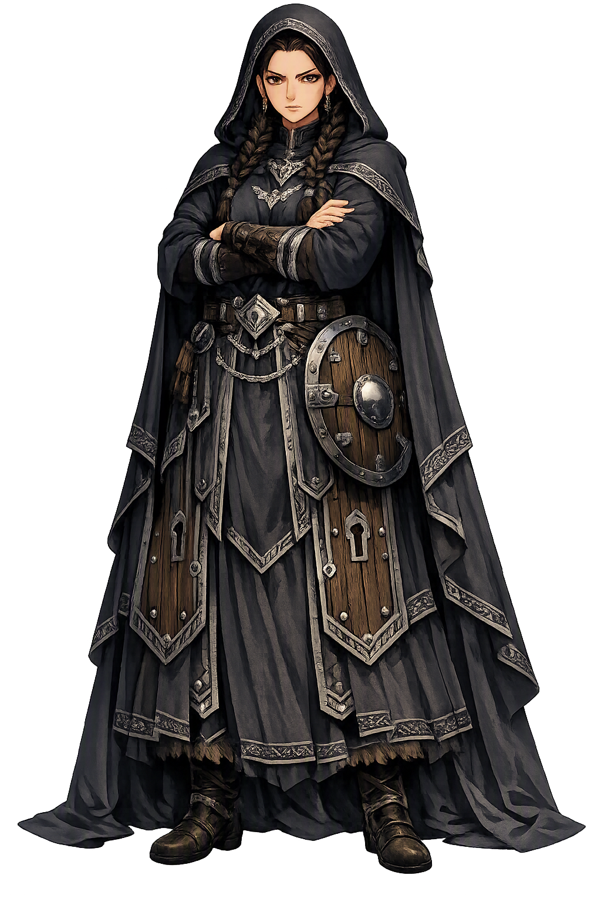

Unicode restoration and ASCII comparison
ᛋᚢᚾ
The name in its original Norse form. Syn (ᛋᚢᚾ) is attested in the source tradition — “Refusal, denial”. Its original diacritics and script distinctions carry the full phonetic and orthographic weight of the source tradition.
syn
The plain syn form is identical to the Unicode restoration. Because this name is already written in Latin letters, no diacritics, stress, or script information were lost — only capitalization differs.
Syn
The Unicode restoration does not need to recover lost marks for Syn. Its value is canonical spelling and consistent cataloguing, not the reconstruction of erased orthography. The domain is readable as-is to both DNS and humanity.
Syn.com → syn.com
The non-ASCII characters in Syn are encoded while the ASCII remains visible. To the DNS, it is Punycode. To humanity, it is Syn.
How Syn travels from ancient script to the modern URL
Owned, ideal, and ASCII forms of Syn
Syn
Restores ᛋᚢᚾ. The full Unicode restoration. syn.com is not in the PuniCodex collection — it is watched for release; if it drops, this temple upgrades to an owned flagship.
How Syn was spoken
The Doorkeeper Who Says No
Syn is the eleventh goddess in Snorri's catalogue of the ásynjur — and the smallest fully grammatical power in the northern pantheon. She guards the door of the hall and shuts it against those who should not enter; at the þing she is appointed to defend the suits she wishes to refute. Her name is the noun itself: syn, 'denial, refusal', and Snorri seals the identity with the proverb the North kept in its mouth — a denial is set up when a man says no. She has no journey, no marriage, no death: her whole mythology is the closed door and the answered accusation, the divine right of refusal.
The door of the hall she keeps and shuts against those who should not enter — the threshold of the divine household made personal, a boundary with a guardian.
Syn, the noun itself — the word that says no. Snorri's proverb records it: a denial is set up when a man says no, and the goddess is the saying made divine.
At the assembly she is set as defender against the suits she wishes to refute — the lawful no, the answer that stands between an accused person and a false claim.
Her place in Snorri's catalogue of the ásynjur, counted between Vör and Hlín and declared of no lesser rank than Frigg's company — rank among the goddesses for a single, indispensable function.
Stories of Syn
Syn's dossier is the shortest in the Edda: one sentence in Gylfaginning, one name in the ásynja þulur, one rule in Skáldskaparmál's grammar of kennings. No poem stages her; no saga gives her a second life; no adventure attaches. And yet the tradition never forgot her, because what she guards is not a story but a word — the small, indispensable word 'no' — and Snorri preserves the proverb that proves the North kept both the word and its goddess in daily use.
Snorri's catalogue of the goddesses moves from [[frigg|Frigg]] through [[saga|Sága]], [[eir|Eir]], [[gefjon|Gefjon]], [[fulla|Fulla]], [[freyja|Freyja]] and the rest, and arrives at the eleventh: Syn. 'She guards the door of the hall and shuts it against those who should not enter, and she is appointed to defend, at assemblies, the suits she wishes to refute.' Then the sentence that fixes her identity forever: 'hence the proverb that a denial is set up when a man says no.' The catalogue closes with Snotra and Gná, and Snorri adds that these ásynjur are of no lesser rank than the rest.
The whole of her mythology is in that one entry. Two functions are given, and they are one function twice: the doorkeeper who excludes, and the defender who refutes. At the threshold and at the law-court, Syn is the power that keeps the wrong thing out.
Syn's name is not a theonym with a hidden etymology; it is the ordinary noun itself. Old Norse syn means 'denial, refusal'; the verb synja means 'to deny, to refuse', and it saturates the legal prose of the sagas wherever a claim is answered with a no. The lexica connect the word with the family of sannr, 'true' — the denial began as a law term, the truth-speaking by which a false accusation is refused. The goddess of saying no is, at root, the goddess of the truthful answer.
Snorri knows exactly what he is doing when he appends the proverb: he is recording a figure the language itself had already made. Whether Syn was an old goddess whose function shrank to a saying, or an abstraction Snorri's tradition personified on the model of Vör, Hlín and Snotra, the handbooks will not decide; Simek and Lindow class her among the personified functions, and the evidence is too thin to overrule them.
Skáldskaparmál's rules for the poets keep Syn in the craft of verse: a woman may be periphrased by the name of any ásynja, and Syn stands in the list of goddesses available to the kenning-maker — refusal lending her name to praise, as Baldr's name stands for a warrior and Freyja's for a lady of rank. The ásynja þulur, the versified name-lists preserved with the same section of the Edda, hold her in the catalogue by name.
It is a humble survival, but it is survival: every skald who named a woman after an ásynja worked from a list that included her, and the scribes who copied the þulur kept the doorkeeper's name in the register of the gods long after any cult there may have been was gone.
No eddic poem names Syn. Völuspá's seeress does not number her among the returning gods; Grímnismál's survey of heaven's halls gives her no dwelling; the lays of gods and heroes pass her by entirely. Her whole being rests on Snorri's prose, the þulur, and the noun the whole language spoke. Where [[nanna|Nanna]] at least has her household's halls in verse, Syn has only the sentence — and the saying.
The silence is itself the evidence the handbooks weigh. A figure attested once, in a catalogue, beside a living proverb, is either a genuine minor cult figure the poems happened to miss or a personification the cataloguing mind of the thirteenth century promoted from grammar. The honest record keeps both doors open — which is, perhaps, the one indignity a doorkeeper must bear.
Syn is the pantheon's smallest power and perhaps its most modern one. Every other goddess in Snorri's catalogue presides over something the world desires — love, healing, wisdom, safe passage, the keeping of oaths. Syn presides over the thing everyone needs and no one thanks: the refusal. The door that does not open. The claim that does not stand. Hers is the only divine function in the corpus that is purely negative, and the tradition ranks her, deliberately, 'of no lesser worth' — a household is not safe because its doors are beautiful but because someone holds them shut.
Enter Extended Lore